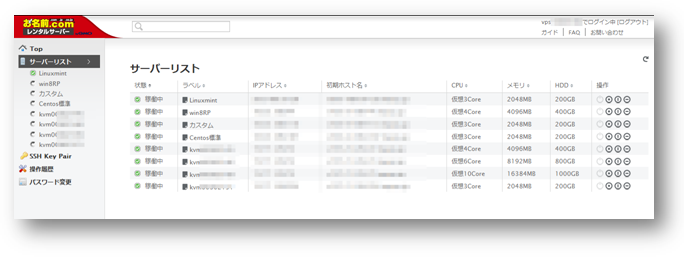
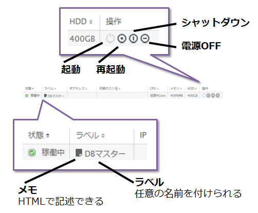
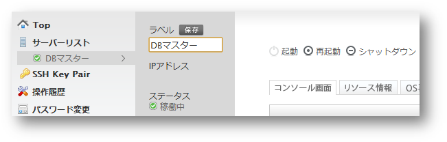
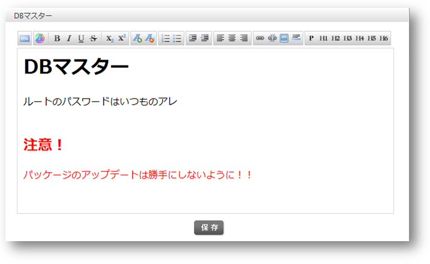
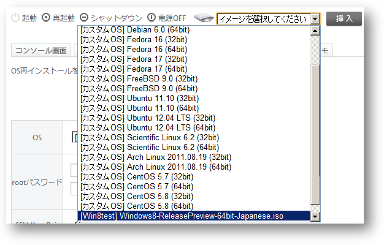
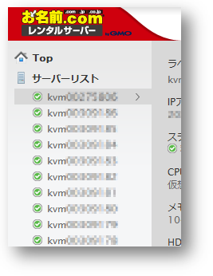

PR：月額833円から、年間1万円以下で使えるお名前.com VPS（KVM）の新プラン登場 64
やっぱり1Gプラン。100台使っても大丈夫！ 部門より
8月1日、お名前.comのVPS（KVM)において、月額833円からの1GBメモリプランが追加された。初期費用は無料。1年間使い続けても総額約1万円以下で1台のグローバルIPアドレスを持ったサーバーを運用できるようになった。今回追加された1GBプランも含めて改めて全プランを整理すると以下のようになる。
| メモリ容量 （プラン名） |
1GB | 2GB | 4GB | 8GB | 16GB |
| 初期費用 | 無料 | 1,680円 （0円※） | 5,680円 （0円※） | 9,681円 （0円※） | 16,680円 （0円※） |
| 月額費用 | 833円 ～940円 |
1,153円 ～1,380円 |
3,243円 ～3,880円 | 6,585円 ～7,880円 | 13,271円 ～15,880円 |
| 初期費用を除く 1年契約時の費用 |
9,999円 | 13,846円 | 38,918円 | 79,027円 | 159,248円 |
| 仮想化方式 | KVM（VirtIO 切り替え可） | ||||
| 割当仮想コア数 | 2コア | 3コア | 4コア | 6コア | 10コア |
| HDD容量 | 100GB | 200GB | 400GB | 800GB | 1TB |
| ディスク構成 | RAID10 | ||||
| ISOイメージ アップロード領域 | 10GB | ||||
| 回線 | 100Mbps共有 | ||||
| 試用期間 | 15日 | ||||
| 支払方法 | クレジット、銀行振込、口座振替、請求書、コンビニ決済 | ||||
※ キャンペーン実施中により現在初期費用無料
格安プランの登場によって複数サーバーの利用もより身近なものになり、予算が許せばたくさん並べてみたいところだ。実際に複数サーバーを利用したときのコントロールパネルは以下のような感じになる。

お名前.comのコントロールパネルは複数サーバーの利用を想定した作りになっていて、サーバーリストに契約サーバーの一覧が表示されながら、そのリストからそれぞれのサーバー操作が行えるようになっている。

一般的な起動や電源OFFなどのほか、サーバーごとに日本語を含む好きなラベルを設定することが可能だ。ラベルの編集はサーバーごとの管理画面で行う。

さらに補足が必要な場合は、サーバーリストにあるメモ（ページ）のアイコンをクリックすれば、より多くの文字情報を保存しておけるので、サーバーの構成情報を記録しておいたり、複数人で作業しているときの連絡掲示版としても使ってもいいかもしれない。

お名前.com VPSの1つの特徴でもあるISOイメージのアップロード機能も、サーバーを横断して利用可能だ。サーバーごとに10GBのISOアップロード用の領域が用意されているが、たとえば、Aというサーバーにおいて、3.3GBほどあるWindows 8のプレビュー版をアップロードして環境作ったりした後、Bという別のサーバーにも同じISOイメージをマウントして試験環境を作っていくことが可能である。

そのほかの機能詳細については、前回ストーリのPR:お名前.comのVPS（KVM）が業界一のコストパフォーマンスを目指してリニューアルを参照していただきたい。

1年間1万円以下でグローバルIPアドレスを持ったサーバーが自由に利用でき、100GBのストレージもあるので、普段使いのサーバー乗り換え検討はもちろんだが、ちょっとしたテスト環境として活用したり、情報収集ツールや監視管理ツールを異なる設定で複数動作させるとき、IPアドレスベースで管理・運用していくという手もあるだろう。もし、年間10万円以内で運用可能な10台のグローバルIPサーバーを自由に利用できたとしたら、皆さんなら何に使う？
15日の無償体験はこちら
（お試しサービスは、通常申し込みのフローで申請し、15日前に契約管理パネルで解約手続きを行う）
今ちょうど解約手続きを・・・ (スコア:4, 興味深い)
知り合いのサーバーをGMOクラウドから移転するというので解約手続きをさせているのだが
解約申し込みはFAXのみ
↓
解約の承認メールが来る（URLに飛んで承認しないと契約を更新するとみなします）
↓
解約の作業開始メールが来る（あと6工程ありますのでさらに２、３日かかりますという内容）
いつになったら解約が終わるのか見当もつかないというｗ